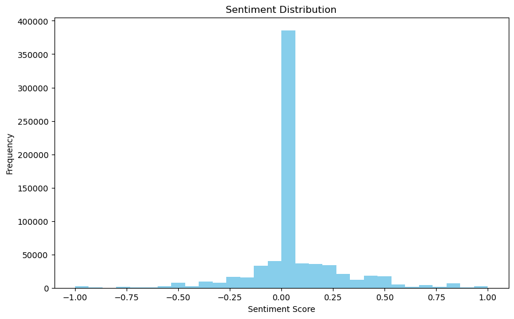
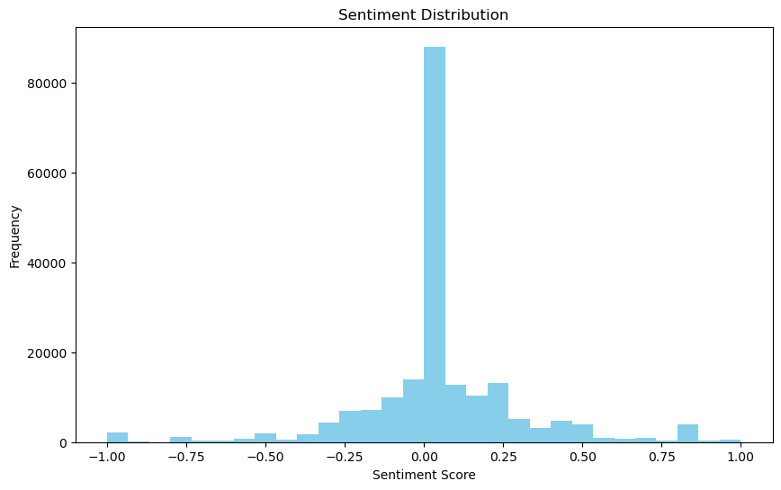
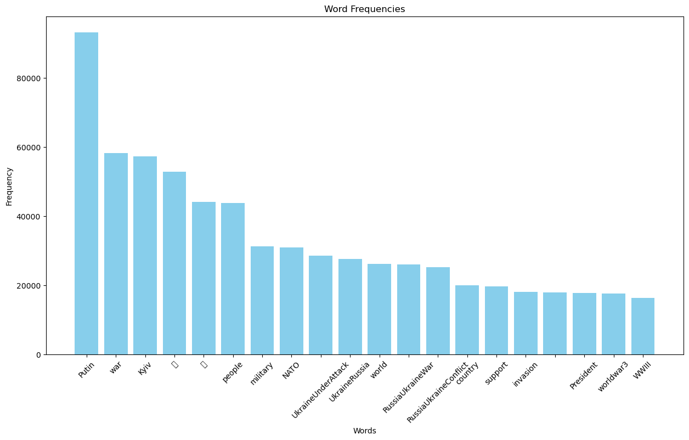
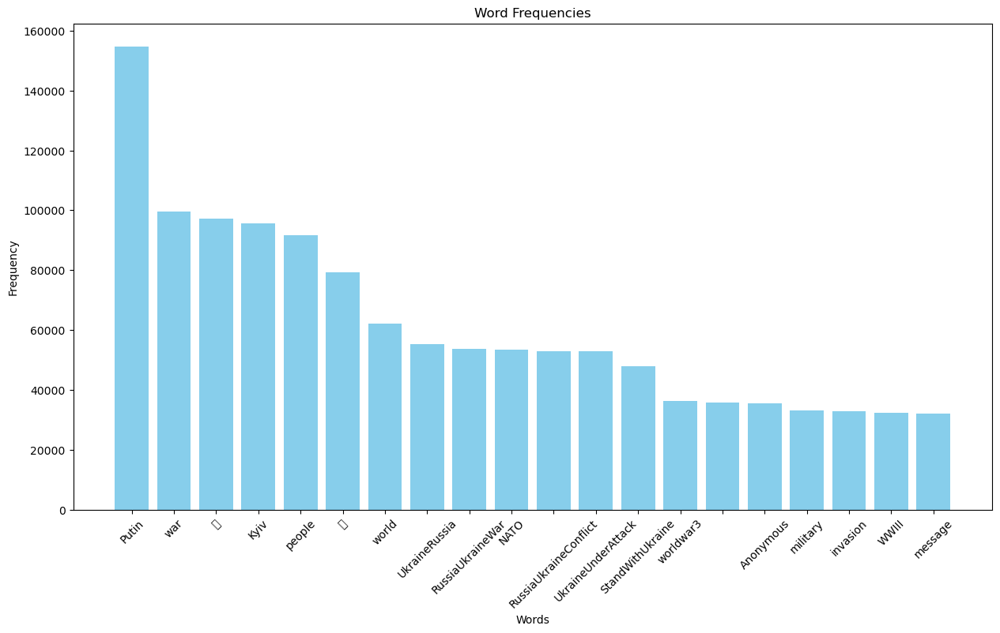
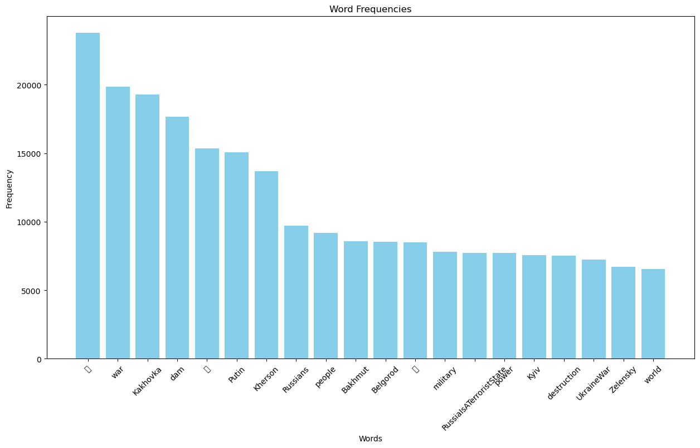
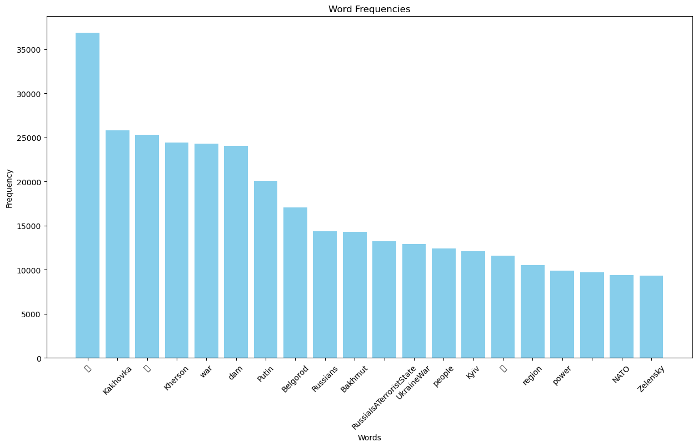
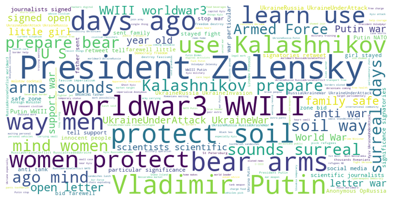
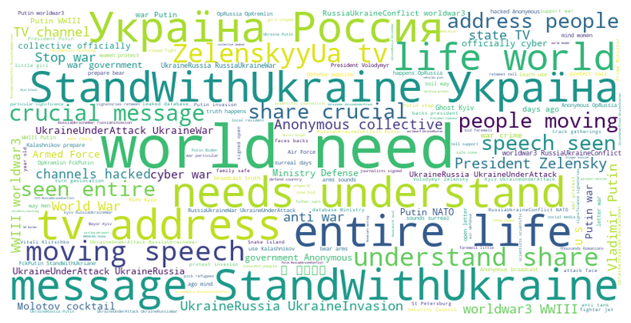
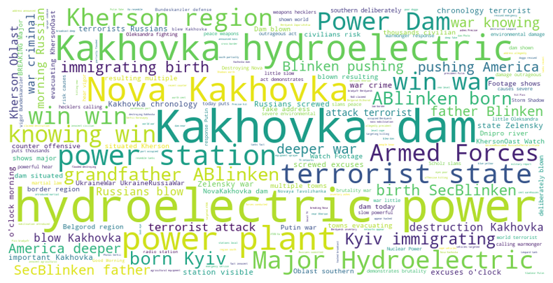
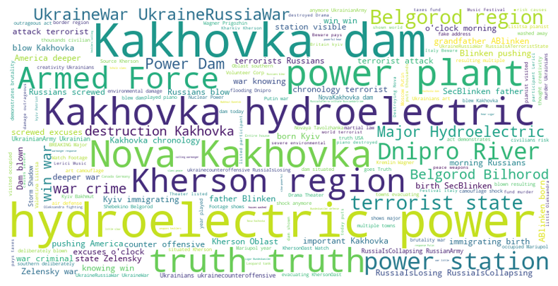

An exploration of American conservatives’ stance on support for Ukraine
Introduction
Conventional wisdom holds that right-wingers should be hawkish and are supposed to tend to support a more aggressive foreign policy compared to liberals, however, this does not seem to be the case for American Republicans in the Russia’s invasion of Ukraine scenario, according to the following accounts. 19 GOP lawmakers urged Biden to stop sending “unrestrained” aid and weapons to Ukraine (The Hill. 2023), and Donald Trump has also claimed to try to broker peace in Ukraine (Business Insider. 2022; Business Insider. 2023). On the other hand, Boris Johnson, the former Prime Minister and the leader of the Conservative Party, who has been supporting the Ukrainian defenders from the beginning, tried to convince Trump to support Ukraine(The Guardian. 2023), and the Italian leader Meloni, who leads a far-right party, is also willing to risk unpopularity to support Ukraine.(Reuters. 2023) Poland, led by United Right, also has been supported Ukraine almost since day one and pleged a lot by its GDP size.(The Economist. 2022) The most interest part is that, the Trump supporters themselves were once considered more hawkish(Sides et al. 2018), but now they want world peace.
Research Question
So now we can see a very counter-intuitive problem: What is discouraging American conservatives from taking a more hawkish stance in support of Ukraine?
Literature Review
Firstly, many scholars argue that the Trump and his follower’s view on foreign policy is a return of Jacksonian tradition. According to Cha (2016), Clarke (2017), and Rolf (2021), Donald Trump’s foreign policy can be perceived as a return of Jacksonianism, which is rooted in an ideological combination of populism, isolationism, and emphasis on the military. It is also unwilling to get too involved in foreign conflicts unless U.S. interests are directly involved.
Trump’s perspective on Jacksonianism is to prioritize American interests over multilateral diplomacy and global commitments. The buzzword “America First” is a prominent feature of the Trump administration’s foreign policy and fundamental principles. Trump’s diplomatic endeavors, including withdrawing the Paris Climate Accord, renegotiating NAFTA, and demanding increased defense spending from NATO allies, can be seen as his deviation from the post-World War II U.S. foreign policy paradigm of shaping and maintaining a leadership role in global institutions.
According to Cha (2016) and Clarke (2017), at the strategic level, Trump’s foreign policy emphasizes militaristic but non-interventionist principles of Jacksonianism. His willingness to increase defense spending and military readiness and to use force (e.g., in response to the use of chemical weapons in Syria or the killing of Iran’s General Soleimani) while being careful not to send more U.S. troops into overstretched overseas conflicts, such as his attempts to withdraw from Afghanistan and Syria, also reflect his understanding of Jacksonianism.
Additionally, according to Rolf (2021), some scholars also claim that Trump’s foreign policy shows some principles of Jeffersonianism. This tradition also advocates minimizing foreign intervention and focusing on domestic issues. Trump’s focus on issues such as immigration and trade balance can be seen as an expression of this foreign policy paradigm. In other words, it’s not too surprising that American conservatives, under Trump’s influence, have also embraced Jacksonianism and are unwilling to intervene in overseas wars.
Secondly, Pierson (2020), Uscinski (2021), and Iyengar (2019) have argued that the polarization of contemporary American politics is featured as the nationalization of politics and has led to a intensifying ideological divide and growing animosity between the two major groups, liberals and conservatives.
According to Iyengar (2019) and Pierson (2020), affective polarization refers to growing partisan animosity and social distance, with individuals possessing negative feelings toward members of the opposing party, often viewing them as a threat to national well-being. This phenomenon can also be described as a team-playing mentality, that voters from both sides view it as an “us versus them”, “blue team versus red team” game, and the delicacy of sub-braches of both parties are marginalized, such as conservative Democrats like Blue Dogs and progressive Republicans, which is also a symptom of the nationalization of politics. In such a scenario, voters from both sides tend to anchor their opinions on a limited number of major issues of their perspective, and “learn” other opinions through socialization from their own party, which in turn increases polarizing partisanship.
This adversary can also lead to biased information processing, in which voters selectively accept information that conforms to their party’s views and reject conflicting information from the opposing side, regardless of its factual accuracy. This phenomenon is catalyzed by selective access to news sources, creating “echo chambers” that reinforce existing beliefs and further polarize.
Such forms of polarization have a significant impact on public opinion. Ideological polarization encourages voters to take more extreme positions and to align themselves more closely with their party’s position on various issues. At the same time, affective polarization punishes compromise and reinforces distrust, leading voters to interpret the opposition party’s behavior in the most negative light.
Uscinski (2021) adds that this divergence is not only due to differing positions on issues, but also to establishment versus anti-establishment sentiments. Voters on both sides are increasingly expressing dissatisfaction with the traditional political system, associating it with political corruption and elite control. This dissatisfaction can lead to support for populist leaders and policies, and to conspiracy theories. We can observe such a phenomenon in the seemingly uncanny alliance between Ted Cruz and Alexandria Ocasio-Cortez.
According to the above arguments from various scholars, conservatives may be very inclined and rewarded to oppose whatever the Biden administration supports; in other words, it is not that conservatives are against explicit stances on the Russo-Ukrainian war, but the Biden administration’s taking side makes conservatives take the other side.
Moreover, this opposition is further fueled by the anti-establishment sentiment of some conservatives. Biden’s decades-long participation in politics, seen by some as a symbol of the political establishment, has sparked opposition from voters disillusioned with the status quo and also encouraged conspiracy arguments from the conservative side on Ukraine issues. Thirdly, there are also intensive evidence of Russ bots manipulation public opinion. Stukal (2019), Im (2020), and Hagen (2020) argue that political troll bots, particularly Russian bots, are impacting public opinion.
Stukal (2019) utilized a neural network approach to identify political Russian Twitter bots.They also measured features such as account creation date, frequency and timing of posts, and nature of interactions with other users to identify and measure their political stance.
Im (2020) also used their approach to identify Russian troll accounts on Twitter. The study distinguishes between ordinary bots and troll accounts, the latter characterized by a more sophisticated level of manipulation. These accounts are identified by examining patterns in account metadata, language usage, and strategic timing of posts.
These bots and troll accounts aim to shape public opinion by amplifying certain narratives and suppressing others.Hagen (2020) argues that these participants significantly influence political discussion networks. By implementing well-orchestrated messages into their information and artificially amplifying them by liking, sharing, or retweeting, these bots can create a distorted view of the popularity or consensus of a particular issue or viewpoint.
The research above shows that conservative users are often targeted because they are vulnerable to certain types of disinformation, particularly those related to nationalism, immigration, or anti-establishment sentiment or conspiracy theories. By exploiting such features of this community, Russian bots seek to deepen social divisions and thereby destabilize the political landscape. In other words, Russian bot manipulation may also contribute to American conservatives’ stance on the Russian-Ukrainian war.
Hypothesis
H1: Conservatives in the US are built differently. They hold different sets of beliefs than other conservatives, such as isolationism.
H2: It is caused by polarization. They are only against what Biden supports. (Iyengar et al. 2019; Pierson and Schickler 2020)
H3: They are misled by Russian bots.(Stukal wt al. 2019; Gorwa and Guilbeault 2020; Hagen et al. 2022)
H4: Their arguments are based on economics. Their perception of inflation leads to their war-weariness.
H5: They genuinely believe that supporting Ukraine will lead to WW3 or nuclear war, and they want to avoid that.
I must clarify that the research does not aim to test whether their arguments are true or not, but how these beliefs interact with conservative individuals’ attitudes toward supporting Ukraine.
Variables
DV: Whether a comment supports Ukraine
IV: The predicting factors in the said hypotheses
Data
The ideal data source will be twitter content, however, recently twitter shut down free access to twitter data. So this research had to incorporate third party scraped twitter data into my research. The Kaggle (2023) project provides twitter data from February 24th 2022, when the armed forces of the Russian Federation officially started their so-called “special military operation”. The Twitter data of this source stopped on June 16th, 2023, when Twitter stopped its operation. So it is fortunate that this dataset at least covers the content of several major events of the Russian-Ukrainian war, such as the loss of Mariupol, the Kharkiv campaign, the start of the Ukrainian counteroffense, etc., but it is unfortunate that it does not cover the most recent and one of the most important events, the one-day rebellion led by Prigozhin.
For the data exploration stage of this project, I will mainly use the Twitter data around the first days of the invasion and the beginning of the Ukrainian counteroffense. In the future, this research may cover all major events. The Twitter data includes tweets text, user description, self-reported location and language, the number of the user’s followers and liked count of the tweets, and published time. I also generated sentiment score using TextBlob library with its built-in function. The problem with TextBlob’s sentiment score is that its dictionary is not well tuned for my research purpose, so the generated sentiment score is rather neutral. Nevertheless, I use it because of the time and complexity’s limitation of this project. In the future, I may find a better dictionary or add words specific to political science purposes to the sentiment dictionary. A document by term matrix is also created based on the filtered and lemmatized Twitter text.
Given the limited time allocated to this project and the sheer amount of data this project requires, there are other data I can acquire that are not currently incorporated into this project. In the future, I may implement the work of other scholars or online projects to identify conservatives and Russian bot-generated content from the Twitter data I have already acquired. (Preoţiuc-Pietro et al. 2017; Im et al. 2020; Dhrumil Mehta et al. 2018) This project can also use Youtube video comment data from major conservative media for more research.
Research Design(revise, including work in progress part)
First of all, after obtaining the Twitter data from the Kaggle scraper project, I merged the data from February 24 to 27, 2022, which is the three-day period after the start of Russia’s invasion of Ukraine, and the data from June 3 to 6, 2023, which is the three-day period after the Ukrainians declared their counteroffensive campaign. I did not choose their actual date of the start of the counteroffense, because it will be harder to determine when the first meaningful counteroffense battle took place without expert opinion, instead I chose the day they released their official video and Zelensky’s statement during the interview (The Wall Street Journal 2023; Institute for the Study of War 2023). I gathered the dates from relatively reliable media sources.
After merging the research date data into two csv files, I started to clean up the data. First, I removed unrelated columns and selected English-only rows to significantly reduce the size of the data. I then tokenized the text, and then filtered the tokenized words with NLTK’s stop word dictionary and my added terms, which were specified for this research only, including very repetitive words such as country names like Russia and Ukraine. I also used SpaCy and NLTK libraries to lemmatize these filtered tokens and generate sentiment scores using TextBlob. Then I created a document by term matrix and selected only the top 0.1% mentioned terms, dropping any term mentioned only once. I also generated word frequency plot and text cloud based on the filtered tokens data frame, and ran regressions and classifications by using the document by term matrix with Scikit-Learn library. In this procedure, I also binarized the sentiment scores to make them easier to classify.
Current Findings


The first two figures are the histogram of the sentiment score, which represents the frequency of the sentiments of each tweet. Figure 1 is the data from the beginning of the invasion, and Figure 2 is during the counteroffense. We can see that a huge quantity of tweets are rated as neutral. There may be several factors that contribute to this result: First, we blame the built dictionary of TextBlob, which is too generic and cannot capture words that are explicit for this event, for example, a keyword StandWithUkraine is not recognized as a sentimental word. Second, it does not distinguish between news accounts and personal accounts. There may be a large number of media and press accounts that actually publish objective and non-sentimental content, and they may contribute enormously to the neutral sentiment tweets. Finally, it is possible that the majority of English tweets are actually not sentimental about this event, but to verify this claim, we may need to manually tune the sentiment dictionary in the future, and the project may have a better result.
The other problem is that the positive and negative sentiments cannot simply be interpreted as for or against supporting Ukrainian efforts. One may be very negative against Russian actions, and the tweets will be detected as negative sentiment, but this attitude is not necessarily against supporting Ukraine’s defense, either financially or morally. To solve this problem, this project will have to tune its dictionary in the future.




The four figures above are the word frequency histogram of the top 20 mentioned words in the text. Figure 3 and 4 are the top 20 most mentioned words during the initial phase of the Russian invasion, and Figure 5 and 6 are the top 20 most mentioned words during the Ukrainian counteroffense, with the data from Figure 3 and Figure 5 filtered out of the non-sentimental data points. I made this effort to better imply the difference between objective content, which may or may not be a press release, and normal user content.
Note that the empty words on the x-axis are emojis that are not dropped. Comparing Figure 3 and 4 and Figure 5 and 6, we can see that the emoji characters are present in both Figure 3, the sentimental tweets, and Figure 4, the tweets that contain a large amount of non-sentimental content. From this it can be inferred that the objective media content may be there, but either the neutral sentiment texts are there or not, emoticons, which are most likely personal accounts, are still present in the graph, meaning that perhaps the bulk of the non-emotional content is not contributed by the media or press releases, but by the general public. To further distinguish whether they are genuine or not, we need to continue to update and tune the dictionary in the future. In addition, we can also focus on the y-axis that the quantity of content in the counter-offensive campaign has decreased significantly. This may mean that the public is less interested in the event after a year of fighting.
And more interestingly, if we compare the difference between the figures between the beginning of the war and the counter-offensive, we can also see that the words of places appear more frequently, while the hashtag-like slogans appear less frequently in Figure 5 and 6. It can be interpreted that in the early stage of the invasion, people are more passionate about creating content and chanting slogans, but after the long war and information bombardment, users may be more knowledgeable and try to learn the names of these tactically or strategically significant locations, even these words may be hard to




Then we can compare Figure 7 to Figure 10, which are word clouds for early war content with only sentimental tweets, all early war tweets, counteroffense content with only sentimental tweets, and all counteroffense tweets. Note that some of the most frequently mentioned words are filtered out, such as stand-alone country names, which are too prominent, overshadowing other words of significant meaning.
Comparing Figures 7 and 8, we can see that in the sentimental content word cloud, the names of Russian and Ukrainian political leaders are mentioned more frequently. One can imagine that such content can be more personal. There are more meaningful words mentioned in the more sentimental figure, such as world war three, learn to use/use Kalashnikov, men and women, women protect, and protect soil, while in figure 8, which contains a large amount of non-sentimental content, we can see more generic slogans that are mentioned by everyone, such as need help, share, crucial message, or standwithukraine, although I believe some of the words should be labeled as at least somewhat sentimental, such as standwithukraine or please help share message.
Yet, when comparing Figures 9 and 10, one is less likely to notice such a difference between sentimental content and generic content. In both word clouds, after filtering out some of the too frequently mentioned words, such as country names, what remains are mostly place names and the names of the facilities involved in the demolition of the dam and the flood it caused, which was most likely intended to stop the Ukrainian counteroffensive endeavor. This again may indicate that after a year of prolonged war, users may be less passionate and more knowledgeable, so the difference between emotional content and objective content is less salient.
| Event | Model | Data Selection | Accuracy |
|---|---|---|---|
| Invasion beginning | Logistic | using all data | 0.6252 |
| Invasion beginning | Logistic | neutral sentiment dropped | 0.8269 |
| Invasion beginning | Random forest | using all data | 0.6038 |
| Invasion beginning | Random forest | neutral sentiment dropped | 0.3174 |
| Counter Offensive | Logistic | using all data | 0.5855 |
| Counter Offensive | Logistic | neutral sentiment dropped | 0.7763 |
| Counter Offensive | Random forest | using all data | 0.5640 |
| Counter Offensive | Random forest | neutral sentiment dropped | 0.3601 |
Chart 1
Finally, I made a set of classifiers to use the document by term matrix to predict the binarized sentiments. I did logistic and random forest classifier to both of the sentimental data and the data including non-sentimental content of both time period, and I also used Scikit-Learn’s built-in function to test the accuracy of the models.
The result is that when using the logistic model, excluding sentimental neutral data points will increase the accuracy of the classifier, which are 0.8269 and 0.7763 in the beginning of the war and the counteroffensive, respectively. However, excluding non-sentimental data points when using the random forest model can significantly decrease the accuracy of the model to an unacceptable level, which is even lower than flipping a coin to take a guess.
We can also observe that in the counter-offensive phase, the accuracy of predicting sentiments by text drops, so it can also confirm the previous finding that Twitter users may be less sentimental in June 2023.
limitations and Futre Research
First, to make this project manageable, I did not use data from all phases of the war, but only from the beginning and the counteroffensive, which is enough to interpret some of the data, but still not a grand picture. In the future, I may have to use the data of all major events of the Russian-Ukrainian war, and even make a time series research if the computing power is sufficient. It is very unfortunate that the data collection stopped just before Prigozhin’s revolt, which can be a significant event and topic on twitter.
Second, even though there are ways to select conservatives in the data, it is still not done because either I get less reliable data or it is too time consuming. It could be extracted from the comments of the major right-wing YouTube channels such as Fox News, but there is no guarantee that all the comments will be conservative. Or it can be done by using the method of Preoţiuc-Pietro et al. (2017) to detect conservatives by the features of their content, but introducing another research and building a new filtering system can be too costly, so I have to leave this for the future.
Third, it is a major drawback that the built-in sentiment dictionary is too general and not specifically built for this research purpose, so it cannot capture all the meaningful and sentimental words. However, building a dictionary will cost more effort and possibly make this project undoable, so I have to use the generic dictionary and do my best to interpret the result.
Finally, if all the above requirements can be fulfilled someday, I can actually test all the hypotheses of this project, and make more comprehensive interpretations of the result.
Bibliography
Cha, Taesuh. 2016. “The Return of Jacksonianism: The International Implications of the Trump Phenomenon.” The Washington Quarterly 39(4): 83–97.
Clark, David H., Benjamin O. Fordham, and Timothy Nordstrom. 2016. “Political Party and Presidential Decisions to Use Force: Explaining a Puzzling Nonfinding: POLITICAL PARTY AND PRESIDENTIAL DECISIONS TO USE FORCE.” Presidential Studies Quarterly 46(4): 791–807.
Clarke, Michael, and Anthony Ricketts. 2017. “Donald Trump and American Foreign Policy: The Return of the Jacksonian Tradition.” Comparative Strategy 36(4): 366–79.
George, Justin, and Todd Sandler. 2022. “NATO Defense Demand, Free Riding, and the Russo-Ukrainian War in 2022.” Journal of Industrial and Business Economics 49(4): 783–806.
Gorwa, Robert, and Douglas Guilbeault. 2020. “Unpacking the Social Media Bot: A Typology to Guide Research and Policy.” Policy & Internet 12(2): 225–48.
Hagen, Loni et al. 2022. “Rise of the Machines? Examining the Influence of Social Bots on a Political Discussion Network.” Social Science Computer Review 40(2): 264–87.
Im, Jane et al. 2020. “Still out There: Modeling and Identifying Russian Troll Accounts on Twitter.” In 12th ACM Conference on Web Science, Southampton United Kingdom: ACM, 1–10. https://dl.acm.org/doi/10.1145/3394231.3397889 (June 15, 2023).
Iyengar, Shanto et al. 2019. “The Origins and Consequences of Affective Polarization in the United States.” Annual Review of Political Science 22(1): 129–46.
Pierson, Paul, and Eric Schickler. 2020. “Madison’s Constitution Under Stress: A Developmental Analysis of Political Polarization.” Annual Review of Political Science 23(1): 37–58.
Preoţiuc-Pietro, Daniel, Ye Liu, Daniel Hopkins, and Lyle Ungar. 2017. “Beyond Binary Labels: Political Ideology Prediction of Twitter Users.” In Proceedings of the 55th Annual Meeting of the Association for Computational Linguistics (Volume 1: Long Papers), Vancouver, Canada: Association for Computational Linguistics, 729–40. http://aclweb.org/anthology/P17-1068 (June 15, 2023).
Rolf, Jan Niklas. 2021. “Donald Trump’s Jacksonian and Jeffersonian Foreign Policy.” Policy Studies 42(5–6): 662–81.
Sides, John, Michael Tesler, and Lynn Vavreck. 2018. “Hunting Where the Ducks Are: Activating Support for Donald Trump in the 2016 Republican Primary.” Journal of Elections, Public Opinion and Parties 28(2): 135–56.
Stukal, Denis, Sergey Sanovich, Joshua A. Tucker, and Richard Bonneau. 2019. “For Whom the Bot Tolls: A Neural Networks Approach to Measuring Political Orientation of Twitter Bots in Russia.” SAGE Open 9(2): 215824401982771.
Uscinski, Joseph E. et al. 2021. “American Politics in Two Dimensions: Partisan and Ideological Identities versus Anti‐Establishment Orientations.” American Journal of Political Science 65(4): 877–95.
Business Insider. 2022. “Trump offers to lead group to mediate peace with Russia.” https://www.businessinsider.com/trump-offers-lead-group-to-mediate-peace-russia-2022-9 (accessed June 7, 2023).
Business Insider. 2023. “Fox News cuts Trump, let Russia have bits of Ukraine.” https://www.businessinsider.com/fox-news-cuts-trump-let-russia-have-bits-of-ukraine-2023-3 (accessed June 7, 2023).
The Economist. 2022. “Which countries have pledged the most support to Ukraine.” https://www.economist.com/graphic-detail/2022/05/02/which-countries-have-pledged-the-most-support-to-ukraine (accessed June 7, 2023).
The Guardian. 2023. “Boris Johnson meeting Donald Trump on Ukraine during US tour.” https://www.theguardian.com/politics/2023/may/26/boris-johnson-meeting-donald-trump-ukraine-us-tour (accessed June 7, 2023).
The Hill. 2023. “GOP lawmakers urge Biden to stop sending unrestrained aid, weapons to Ukraine.” https://thehill.com/homenews/house/3961754-gop-lawmakers-urge-biden-to-stop-sending-unrestrained-aid-weapons-to-ukraine/ (accessed June 7, 2023).
The Wall Street Journal. 2023. “Ukraine’s Zelensky: We Are Ready for Counteroffensive - WSJ.” https://www.wsj.com/articles/ukraines-zelensky-we-are-ready-for-counteroffensive-22f4f3f2?st=ewp1mmtu85zlnb8&reflink=desktopwebshare_permalink (June 25, 2023).
Reuters. 2023. “Italy’s Meloni ready to risk unpopularity over support for Ukraine.” https://www.reuters.com/world/europe/italys-meloni-ready-risk-unpopularity-over-support-ukraine-2023-03-21/ (accessed June 7, 2023).
Dhrumil Mehta et al. 2018 “3 Million Russian Troll Tweets.” 2023. https://github.com/fivethirtyeight/russian-troll-tweets (June 15, 2023).
Institute for the Study of War. 2023. “Publications | Institute for the Study of War.” https://www.understandingwar.org/publications?page=3 (June 18, 2023).
Kaggle. 2023. “Ukraine Conflict Twitter Dataset.” https://www.kaggle.com/datasets/bwandowando/ukraine-russian-crisis-twitter-dataset-1-2-m-rows (June 25, 2023).